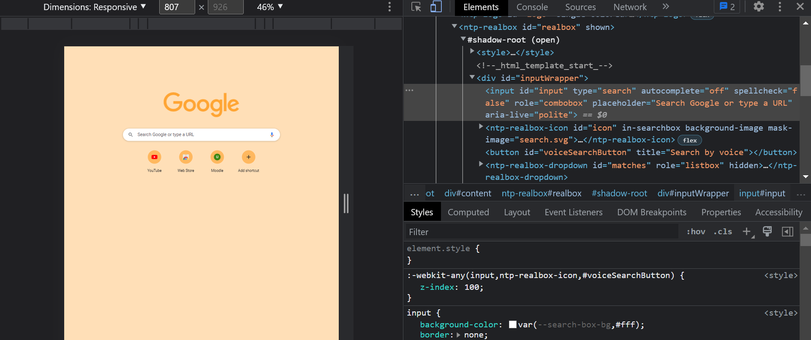

How to test Local Website On Mobile
By Mohammad Waseem, Community Contributor - December 30, 2021


Among the many requirements placed upon developers, a rather important one is to identify if a website will work as efficiently on mobile devices as on desktop. Often, it is important to figure this out while the site is still being designed i.e not publically available. In other words, they have to find a way to test local websites on mobile devices.
This article will explore two methods by which you can accomplish this:
- Viewing the local websites on a mobile device simulator
- Using online testing tools like Browserstack.
Table of Contents
How to view Local Websites On Mobile Devices
To view the local websites on mobile devices, you will need to understand IP addresses and port numbers in the localhost URLs. The following steps will help you view local websites on any devices connected to the local network.
- First of all, make sure that you have the application running on the local machine. And, note down the port number (like 5000, 8000, etc) from the localhost URL. e.g - localhost:5000, 127.0.0.1, etc.
- After getting the information on the localhost port number, get information about local IP address. The process is simple - Open the console or the command prompt and type "ipconfig". Running the command in the console will get you the necessary IPv4 information needed for the next step to work.
- After gathering the IP address and the port number, enter the URL in the format IP adress: port number, and you will be able to access the local website on the mobilr device/devices.
After viewing the mobile website/application on the browser, the next step is to test the website.
How to Test a Local Website On a Mobile Device
Since we are already viewing the local website on the mobile device, we can start testing it. After that, we can use the dev tools on the Chrome browser to debug.
-
Once you have opened the website on the browser, open the developer's tols in Chrome.
-
After opening developer tools, you can choose from a variety of mobile devices available.
-
Take note of "inspect element", which allows you to identify or hover the web page's elements.
-
Measuring performance, including the web vitals, etc, can be measured using the developer tools.
You can make changes to elements in the console and even their positions.
Directly copy the locators for selenium automation testing like XPath, CSS, ID, name,etc.

Multi-line scripting in the console.
The challange with this approach is that sometimes, you might encounter problems like "ipconfig", not returning results due to inconsistencies in the path variable. To avoid problems like these, you can choose cross-browser testing tools like BrowserStack for ease of access.
How to Test a Local Website Using BrowserStack
Browserstack's real device cloud provides thousands of mobile devices that can be used in real-time for mobile testing of local websites. The devices includes various options from different brands and operating systems that give an authentic assessment of the local website.
Now, to test a local website using BrowserStack, implement the folowing steps:
-
To view the local websites on the devices, download BrowserStack local extension that will enale the local connection every
time you are trying to view a local website on any of the selected devices. -
After downloading the BrowserStack local, choose any of the devices available on the dashboard and wait for its real-time simulation. You will notice that the local testing, tab shows a gren light, which means the connection has been successful and you can view these websites on mobile devices.
-
BrowserStack also provides developer tools with which you can locate, inspect web element, etc.
Now that we know how we can view and test the local websites ising BrowserStack tools, let's discus a few advantages that comes with it.
Advantages of testing on BrowserStack
- You can test your web application on over 300+ real browsers and devices.
- Development and debugging using the developer tools are supported on various browsers like Chrome, FireFox, Opera, Edge, Safari, Internet Explorer, etc.
- Test websites easily in environments behind one or more proxies, behind firewall or VPN, etc.
Ease access and user-friendly interface is what sets it apart from other convertional methods of testing local websites on mobiledevices. For more details, check out Local Testing with BrowserStack.
Testing local websites on mobile devices fullfills significant stakeholder requirements. It affirms that their product/app will run efficiently on any mobile device in real user conditions, without having to make it publicly accessible. With BrowserStack, they can test local versions of the site on real mobile devices, thus getting conclusive results without having to deal with user displeasure for realising an inadequately optimized wesite.
Was this post useful?